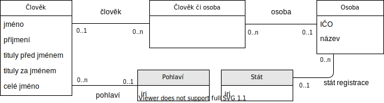

Tento dokument je sdílenou specifikací pro zveřejňování informací o lidech a osobách pro použití v otevřeých formálních normách ve smyslu § 3 odst. 9 zákona č. 106/1999 Sb., o svobodném přístupu k informacím.
Specifikace je ilustrována příklady dat ve formátech JSON-LD [[json-ld11]] a tedy i JSON [[ECMA-404]], XML [[xml]] a CSV [[rfc4180]].
Přehled
Rozlišujeme člověka, tedy fyzickou osobu, a právnickou osobu.
Pokud se v některé roli může vyskytovat jak právnická, tak fyzická osoba, což je častý případ, lze použít entitu Člověk či osoba dle této OFN.

Model člověka či osoby. Vazby bez kardinalit(šipka) reprezentují dědění vlastností a vazeb třídy Věc.
Specifikace
V této sekci jsou definovány vlastnosti lidí a osob.
Pro každou vlastnost je uveden její identifikátor, který je pro její reprezentaci použit ve všech datových formátech, její název, datový typ, popis a příklad. Všechny třídy, které nejsou specifikovány jinou otevřenou formální normou, dědí vlastnosti a vazby třídy Věc.
Člověk
Člověk a jeho jméno. Kromě níže specifikovaných vlastností a vazeb je možné u této třídy použít také vlastnosti a vazby třídy Věc, která je specifikována otevřenou formální normou Věc.
Právnická osoba. Kromě níže specifikovaných vlastností a vazeb je možné u této třídy použít také vlastnosti a vazby třídy Věc, která je specifikována otevřenou formální normou Věc.
Fyzická či právnická osoba.
Cílem existence této třídy je sjednotit způsob, jakým se reprezentuje případ, kdy se v datech může ve stejné roli vyskytnout jak právnická, tak fyzická osoba.
Příkladem může být provozovatel akce.
Příklady
V této sekci jsou uvedeny příklady reprezentace lidí a osob ve formátech JSON-LD [[!json-ld11]] a tedy i JSON [[!ECMA-404]], XML [[!xml]] a CSV [[!rfc4180]] a v různých úrovních detailu.
Datová schémata, která jsou použita v příkladech, lze přímo použít a zahrnout do publikačních plánů.
Pro formáty JSON a XML jsou k dispozici příslušná schémata, tedy Schéma pro formát JSON v jazyce JSON Schema [[!json-schema]] a Schéma pro formát XML v jazyce XML Schema [[!xmlschema11-1]].
Pro formát JSON-LD [[!json-ld11]] je k dispozici kontext.
Lze také použít zápis v CSV.
Soubor v CSV je nutné doplnit schématem dle specifikace CSV on the Web [[!tabular-data-primer]].
Pokud je kontakt použit v rámci jiného datového standardu, tak se jména sloupců v CSV tabulce tvoří názvy atributů.
Zanořování je řešeno spojením názvu entity z jiného standardu, například kontaktní_osoba a z názvu atributu člověka jejich spojením pomocí znaku podtržítka _, například kontaktní_osoba_příjmení.
Do schématu si lze v případě potřeby přidávat další atributy.
V následujících příkladech jsou nad rámec standardu přidán atribut poznámka.
V XML se vlastní atributy přidávají na závěr kontaktu, do vlastního XML jmenného prostoru (XML namespace [[!xml-names]]).
V tomto příkladu jsou nové atributy přidány do XML jmenného prostoru x.
Alternativně je možné si nadefinovat celé nové XML schéma, které by vycházelo ze zde uvedeného základního XML schématu.
Do schématu si lze v případě potřeby přidávat další atributy.
V následujících příkladech jsou nad rámec standardu přidán atribut poznámka.
Také je ukázán příklad identifikace právnické osoby z jiné země.
V XML se vlastní atributy přidávají na závěr kontaktu, do vlastního XML jmenného prostoru (XML namespace [[!xml-names]]).
V tomto příkladu jsou nové atributy přidány do XML jmenného prostoru x.
Alternativně je možné si nadefinovat celé nové XML schéma, které by vycházelo ze zde uvedeného základního XML schématu.